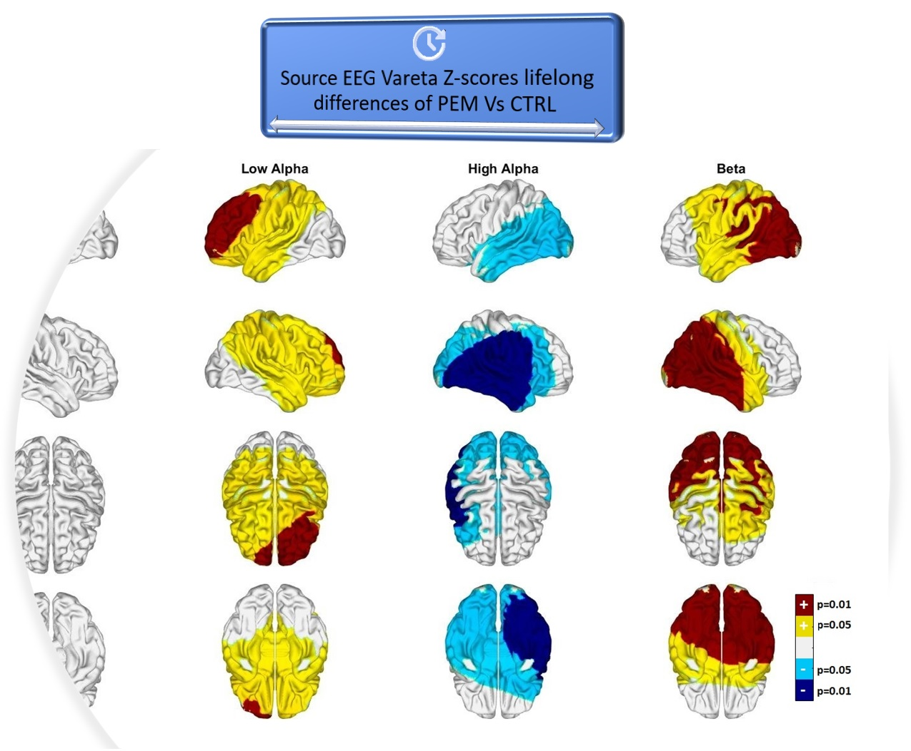

Overview

This project will enhance the studies on malnutrition in early life and its long-term effects on mental health and brain development over the lifespan and across generations. The initial project will focus on the Barbados Nutrition Study, a 50+ year longitudinal study that has followed the children with histories of malnutrition, their offspring and grandchildren.
The project will consist of multidisciplinary research in animal models of prenatal and intergenerational malnutrition. Exciting new facets of this research involve epigenetic mechanisms which offer an intriguing explanation of earlier findings and provide a powerful new tool to identify potential intergenerational mechanisms of early life malnutrition and associated behavioral and mental health outcomes. An important aspect is the identification of early brain biomarkers of child malnutrition that predict adverse mental health outcomes in middle and late adulthood.
Goals
This multi-national collaboration invites other researchers to contribute their own methodologies and multimodal analyses to better describe and understand these datasets. At the same time, this research initiative confers with investigators collecting data from other populations to better understand the foundations of developmental factors.
Given the global prevalence of malnutrition in all parts of the world, the outcome of this study aims to produce evidence about the persistent negative effects of malnutrition in early life, applicable to supporting intervention and policy initiatives across international organizations and governments working to address these challenges.
Select Publications
- Galler, J., Bryce, C., Zichlin, M.L., Fitzmaurice, G., Eaglesfield, G.D., Waber, D.P., 2012. Infant malnutrition is associated with persisting attention deficits in middle adulthood. The Journal of nutrition 142, 788–794. https://doi.org/10.3945/JN.111.145441
- Galler, J.R., RAMSEY, F., SOLIMANO, G., LOWELL, W.E., MASON, E., 1983b. The Influence of Early Malnutrition on Subsequent Behavioral Development: I. Degree of Impairment in Intellectual Performance. Journal of the American Academy of Child Psychiatry 22, 8–15. https://doi.org/10.1097/00004583-198301000-00002
- Galler, J.R., RAMSEY, F., SOLIMANO, G., LOWELL, W.E., 1983a. The Influence of Early Malnutrition on Subsequent Behavioral Development: II. Classroom Behavior. Journal of the American Academy of Child Psychiatry 22, 16–22. https://doi.org/10.1097/00004583-198301000-00003
- Taboada-Crispi, A., Bringas-Vega, M.L., Bosch-Bayard, J., Galán-García, L., Bryce, C., Rabinowitz, A.G., Prichep, L.S., Isenhart, R., Calzada-Reyes, A., VIrues-Alba, T., Guo, Y., Galler, J.R., Valdés-Sosa, P.A., 2018. Quantitative EEG Tomography of Early Childhood Malnutrition. Frontiers in Neuroscience 12, 1–15. https://doi.org/10.3389/fnins.2018.00595
- Bringas Vega, M.L., Guo, Y., Tang, Q., Razzaq, F.A., Calzada Reyes, A., Ren, P., Paz Linares, D., Galan Garcia, L., Rabinowitz, A.G., Galler, J.R., Bosch-Bayard, J., Valdes Sosa, P.A., 2019. An Age-Adjusted EEG Source Classifier Accurately Detects School-Aged Barbadian Children That Had Protein Energy Malnutrition in the First Year of Life. Frontiers in Neuroscience 13, 1222. Frontiers in Neuroscience 12, 1–15. https://doi.org/10.3389/fnins.2019.01222